I see the player you mean.
[Playername]?
Yes. Take care. It has reached a higher level now. It can read our thoughts.
That doesn't matter. It thinks we are part of the game.
I like this player. It played well. It did not give up.
It is reading our thoughts as though they were words on a screen.
That is how it chooses to imagine many things, when it is deep in the dream of a game.
Words make a wonderful interface. Very flexible. And less terrifying than staring at the reality behind the screen.
They used to hear voices. Before players could read. Back in the days when those who did not play called the players witches, and warlocks. And players dreamed they flew through the air, on sticks powered by demons.
What did this player dream?
This player dreamed of sunlight and trees. Of fire and water. It dreamed it created. And it dreamed it destroyed. It dreamed it hunted, and was hunted. It dreamed of shelter.
Hah, the original interface. A million years old, and it still works. But what true structure did this player create, in the reality behind the screen?
It worked, with a million others, to sculpt a true world in a fold of the [scrambled], and created a [scrambled] for [scrambled], in the [scrambled].
It cannot read that thought.
No. It has not yet achieved the highest level. That, it must achieve in the long dream of life, not the short dream of a game.
Does it know that we love it? That the universe is kind?
Sometimes, through the noise of its thoughts, it hears the universe, yes.
But there are times it is sad, in the long dream. It creates worlds that have no summer, and it shivers under a black sun, and it takes its sad creation for reality.
To cure it of sorrow would destroy it. The sorrow is part of its own private task. We cannot interfere.
Sometimes when they are deep in dreams, I want to tell them, they are building true worlds in reality. Sometimes I want to tell them of their importance to the universe. Sometimes, when they have not made a true connection in a while, I want to help them to speak the word they fear.
It reads our thoughts.
Sometimes I do not care. Sometimes I wish to tell them, this world you take for truth is merely [scrambled] and [scrambled], I wish to tell them that they are [scrambled] in the [scrambled]. They see so little of reality, in their long dream.
And yet they play the game.
But it would be so easy to tell them...
Too strong for this dream. To tell them how to live is to prevent them living.
I will not tell the player how to live.
The player is growing restless.
I will tell the player a story.
But not the truth.
No. A story that contains the truth safely, in a cage of words. Not the naked truth that can burn over any distance.
Give it a body, again.
Yes. Player...
Use its name.
[Playername]. Player of games.
Good.
Take a breath, now. Take another. Feel air in your lungs. Let your limbs return. Yes, move your fingers. Have a body again, under gravity, in air. Respawn in the long dream. There you are. Your body touching the universe again at every point, as though you were separate things. As though we were separate things.
Who are we? Once we were called the spirit of the mountain. Father sun, mother moon. Ancestral spirits, animal spirits. Jinn. Ghosts. The green man. Then gods, demons. Angels. Poltergeists. Aliens, extraterrestrials. Leptons, quarks. The words change. We do not change.
We are the universe. We are everything you think isn't you. You are looking at us now, through your skin and your eyes. And why does the universe touch your skin, and throw light on you? To see you, player. To know you. And to be known. I shall tell you a story.
Once upon a time, there was a player.
The player was you, [Playername].
Sometimes it thought itself human, on the thin crust of a spinning globe of molten rock. The ball of molten rock circled a ball of blazing gas that was three hundred and thirty thousand times more massive than it. They were so far apart that light took eight minutes to cross the gap. The light was information from a star, and it could burn your skin from a hundred and fifty million kilometres away.
Sometimes the player dreamed it was a miner, on the surface of a world that was flat, and infinite. The sun was a square of white. The days were short; there was much to do; and death was a temporary inconvenience.
Sometimes the player dreamed it was lost in a story.
Sometimes the player dreamed it was other things, in other places. Sometimes these dreams were disturbing. Sometimes very beautiful indeed. Sometimes the player woke from one dream into another, then woke from that into a third.
Sometimes the player dreamed it watched words on a screen.
Let's go back.
The atoms of the player were scattered in the grass, in the rivers, in the air, in the ground. A woman gathered the atoms; she drank and ate and inhaled; and the woman assembled the player, in her body.
And the player awoke, from the warm, dark world of its mother's body, into the long dream.
And the player was a new story, never told before, written in letters of DNA. And the player was a new program, never run before, generated by a sourcecode a billion years old. And the player was a new human, never alive before, made from nothing but milk and love.
You are the player. The story. The program. The human. Made from nothing but milk and love.
Let's go further back.
The seven billion billion billion atoms of the player's body were created, long before this game, in the heart of a star. So the player, too, is information from a star. And the player moves through a story, which is a forest of information planted by a man called Julian, on a flat, infinite world created by a man called Markus, that exists inside a small, private world created by the player, who inhabits a universe created by...
Shush. Sometimes the player created a small, private world that was soft and warm and simple. Sometimes hard, and cold, and complicated. Sometimes it built a model of the universe in its head; flecks of energy, moving through vast empty spaces. Sometimes it called those flecks "electrons" and "protons".
Sometimes it called them "planets" and "stars".
Sometimes it believed it was in a universe that was made of energy that was made of offs and ons; zeros and ones; lines of code. Sometimes it believed it was playing a game. Sometimes it believed it was reading words on a screen.
You are the player, reading words...
Shush... Sometimes the player read lines of code on a screen. Decoded them into words; decoded words into meaning; decoded meaning into feelings, emotions, theories, ideas, and the player started to breathe faster and deeper and realised it was alive, it was alive, those thousand deaths had not been real, the player was alive
You. You. You are alive.
and sometimes the player believed the universe had spoken to it through the sunlight that came through the shuffling leaves of the summer trees
and sometimes the player believed the universe had spoken to it through the light that fell from the crisp night sky of winter, where a fleck of light in the corner of the player's eye might be a star a million times as massive as the sun, boiling its planets to plasma in order to be visible for a moment to the player, walking home at the far side of the universe, suddenly smelling food, almost at the familiar door, about to dream again
and sometimes the player believed the universe had spoken to it through the zeros and ones, through the electricity of the world, through the scrolling words on a screen at the end of a dream
and the universe said I love you
and the universe said you have played the game well
and the universe said everything you need is within you
and the universe said you are stronger than you know
and the universe said you are the daylight
and the universe said you are the night
and the universe said the darkness you fight is within you
and the universe said the light you seek is within you
and the universe said you are not alone
and the universe said you are not separate from every other thing
and the universe said you are the universe tasting itself, talking to itself, reading its own code
and the universe said I love you because you are love.
And the game was over and the player woke up from the dream. And the player began a new dream. And the player dreamed again, dreamed better. And the player was the universe. And the player was love.
You are the player.
Wake up.
"Twenty years from now you will be more disappointed by the things that you didn't do than by the ones you did do. Sothrow off the bowlines. Sail away from the safe harbor. Catch the trade winds in your sails. Explore. Dream. Discover." - Unknown
